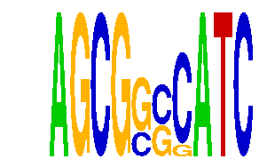

family_15 |
|---|
|  |
| Download PWM |
| Download instances (motifs) |
| Show motif distribution |
Query_ID | Query_Consensus | Subject_Name | Source_DB | Subject_ID | Length | Orientation | Offset | Divergence | Overlap | Subject_Consensus |
|---|---|---|---|---|---|---|---|---|---|---|
| family_15 | AGCGGCCATC | HXB1 | HOCOMOCO | HXB1_HUMAN.H10MO.D | 10 | reverse-complement | 5 | 0.353 | 5 | TGATGGATGG |
| family_15 | AGCGGCCATC | ZN410 | HOCOMOCO | ZN410_HUMAN.H10MO.D | 13 | reverse-complement | 5 | 0.582 | 5 | TATTATGGGATGK |
| family_15 | AGCGGCCATC | Gata1 | JASPAR | MA0035.1 | 6 | reverse-complement | 5 | 0.664 | 5 | NGATNN |
Sequence | Start_position (from start) | Start_position (from end) | Average conservation | Best conservation score | Instance_with_best_CS | Best_Z-score | Instance_with_best_ZS | Strand |
|---|---|---|---|---|---|---|---|---|
| chr5:122552226-122553226 | 295 | 305 | 0.9372 | 0.955 | AGCGGSSATC | 16.767763 | AGCGSSCATC | 1 |
| chr15:76843572-76844572 | 209 | 219 | 0.0044 | 0.01 | AGCGSSCATC | 16.767763 | AGCGSSCATC | -1 |
| chr1:40862276-40863276 | 578 | 588 | 0.0577 | 0.178 | AGCGSSCATC | 16.767763 | AGCGGSSATC | 1 |
| chr14:28050836-28051836 | 529 | 539 | 0.0095 | 0.018 | AGCGSSCATC | 16.767763 | AGCGSSCATC | -1 |
| chr17:44437605-44438605 | 401 | 411 | 0.0035 | 0.019 | AGCGGSSATC | 16.767763 | AGCGSSCATC | 1 |
| chr12:104575751-104576751 | 368 | 378 | 0.0038 | 0.034 | AGCGGSSATC | 16.767763 | AGCGSSCATC | 1 |
| chr9:110282801-110283801 | 218 | 228 | 0.6101 | 1 | AGCGGSSATC | 16.767763 | AGCGSSCATC | 1 |
| chr5:111287802-111288802 | 398 | 408 | 0.1852 | 0.448 | AGCGSSCATC | 16.767763 | AGCGGSSATC | 1 |
| chr11:58952154-58953154 | 135 | 145 | 0.9974 | 1 | AGCGSSCATC | 16.767763 | AGCGGSSATC | 1 |
| chr15:79844634-79845634 | 692 | 702 | 0.9873 | 1 | AGCGSSCATC | 16.767763 | AGCGSSCATC | -1 |
| chr5:100643632-100644632 | 389 | 399 | NA | NA | AGCGSSCATC | 16.767763 | AGCGSSCATC | 1 |
| chr6:84523893-84524893 | 622 | 632 | 0.9835 | 1 | AGCGGSSATC | 16.767763 | AGCGSSCATC | 1 |
| chr1:191598503-191599503 | 638 | 648 | 0.0072 | 0.035 | AGCGSSCATC | 16.767763 | AGCGSSCATC | -1 |
| chrX:154136936-154137936 | 197 | 207 | 0.8636 | 0.999 | AGCGGSSATC | 16.767763 | AGCGGSSATC | -1 |
| chr19:37888590-37889590 | 552 | 562 | 0.987 | 1 | AGCGGSSATC | 16.767763 | AGCGGSSATC | 1 |
| chr14:35032619-35033619 | 39 | 49 | 0.019 | 0.055 | AGCGSSCATC | 16.767763 | AGCGGSSATC | 1 |